標高情報の可視化と地形の観察
数値標高モデル（DEM: Digital Elevation Model）を用いて、扇状地を可視化し、GIS上で地形の特徴を観察するため、地図を作成する。
- 標高データの取得と変換
- マージ（結合）と抽出：対象地域の作成
- 空間座標の変換
- 基本統計量の確認
- 標高情報を用いた色分け
- 等高線の出力
- 傾斜量図・陰影図
- 三次元表示
- 地形断面図の作成
作成した地図を用いた授業例
高等学校の地理総合の河川地形において、住吉川の扇状地を対象に標高情報を可視化しながら、地形の特徴を解説する授業を想定する。

以下も含めて、課題との関連などから、演習用データと解説用データは異なります。解説用データにはSRTMを使用しています。
0. 基礎知識・スキル
1. 数値標高モデルのダウンロード
数値標高モデルをダウンロードできるWebサイトは、いくつかあるが、今回は基盤地図情報から次の手順で入手する。基盤地図情報のダウンロードには、アカウントが必要なため事前に取得する。
- 基盤地図情報サイトにアクセスし、基盤地図情報のダウンロードに進む
- 基本項目・数値標高モデルのダウンロードから、
数値標高モデルをクリックする - アカウントがない場合は、アカウントを作成する
- 左のウィンドウから
10mメッシュ 10B（地形図の等高線）にのみチェックをつける（この後の作業で対象地域のデータがなかった場合は、他の項目を選択して使用する） - 左の地図ウィンドウから、地図をズームして対象地域を選択する（今回は、神戸市灘区と東灘区あたりの523501と523502の2地域をクリックする）
- 下部のウィンドウに2つの範囲が選択されていることを確認し、右下の
ダウンロードリストに追加をクリック - 下部ウィンドウのタブを
検索結果からダウンロードリストに切り替えて、右下のダウンロード等へをクリック - ダウンロードファイルリストの右上にある
まとめてダウンロードをクリックする - 利用目的アンケートを送信すると、データがダウンロードするためのメールが送信される
- メールボックスでリンクを開き、データを入手する（ダウンロードしたデータはzipファイルのままにしておく）
データの変換
QGISを立ち上げ、プラグイン>プラグインの管理とインストールからQuickDEM4JPを検索して、インストールする。
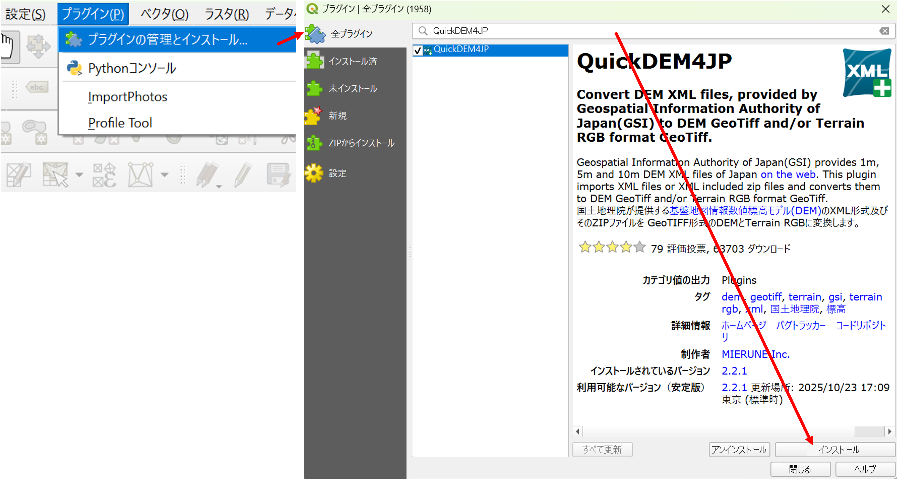
インストールしたQuickDEM4JPを用いて、ダウンロードしたデータを以下のように読み込む（2つのxmlファイルがあるが、以下の処理は一つずつ行う）。
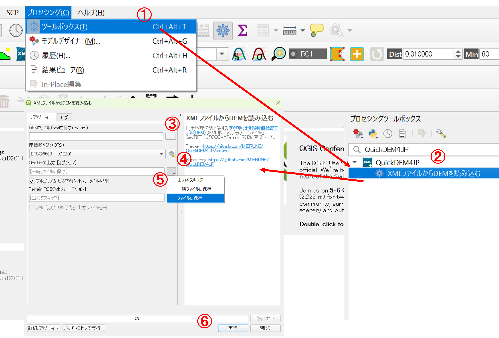
プロセッシング > ツールボックスを選択- ツールボックスから
QuickDEM4JPを検索し、XMLファイルからDEMを読み込むをクリック - ダウンロードしたファイルを指定
- 座標参照系を
JGD2011にする - 出力ファイルを指定（ファイルは.tiffという形式（geotiff）で出力される）
実行をクリック
2. データの結合と座標変換
今回の場合、QGIS上に2つのgeotiffファイルがあるため、以下の処理で一つのファイルにつなげる。 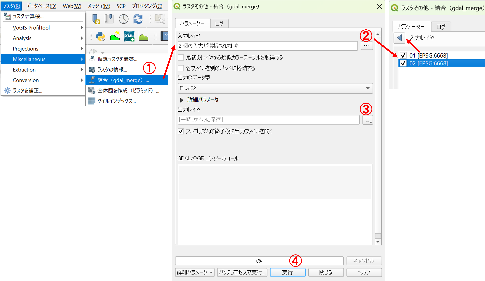
ラスタ > Miscellaneous > 結合(gdal_merge)を選択- 入力レイヤを2つ指定
- 出力ファイルを指定
実行をクリック
データが結合されたことを確認し、不要なファイルを削除した後、次の手順で空間座標の変換の処理を行う。 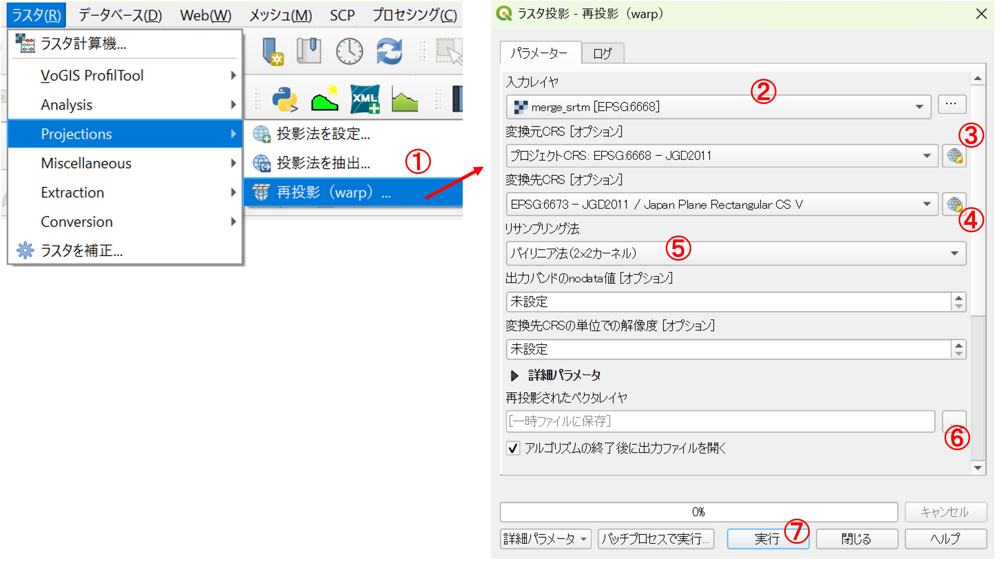
ラスタ > Projections > 再投影(warp)を選択- 入力レイヤを指定
- 変換元CRSを
6668 - 変換先CRSを
6673 リサンプリング方法をバイリニア法（2×2カーネル）- 出力ファイルを指定
実行をクリック
出力ファイルを確認後、以下のようにQGISのマップフレームの座標系を6673に合わせる。
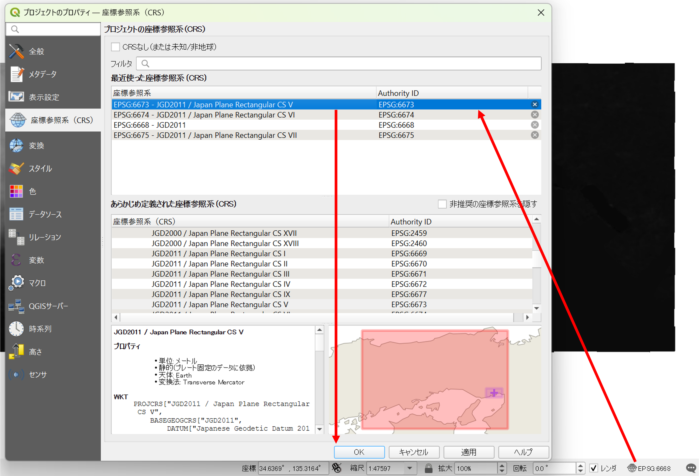
3. データの切り出し
住吉川の扇状地の範囲のデータを作成するため、結合したデータを以下の手順で切り出す。抽出範囲は、左下の図を参考に設定するが、狭すぎなければおおまかで良い。 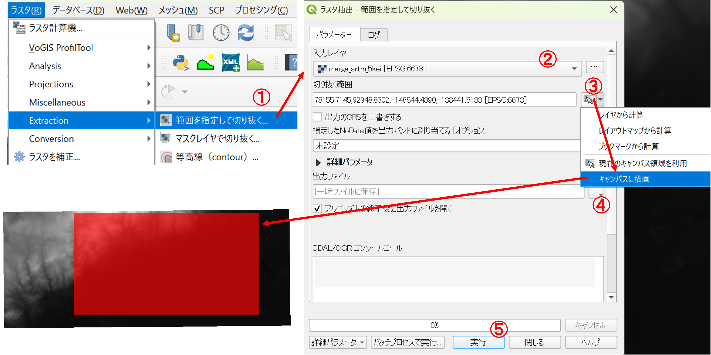
ラスタ > Extraction > 範囲を指定して切り抜くを選択- 入力レイヤを指定
キャンパスに描画を選択し、地図上で切り出したい範囲をドラッグして指定- 出力ファイルを指定
実行をクリック
4. 基本統計量などの確認
作成したレイヤのプロパティ > 情報をクリックすると、基本統計量、ピクセルの大きさ、座標参照系が確認できる。

以下のように、ヒストグラムも確認できる。ヒストグラムは、標高ごとに色分けする際の参考にもなる。 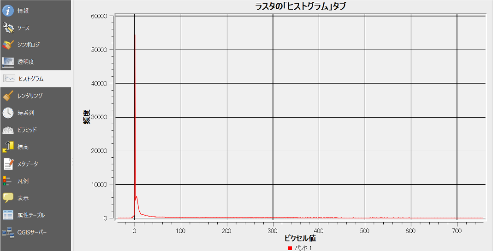
5. 標高値に基づく色分け（標高段彩図の作成）
次の手順で標高値に基づく色分けを行う。 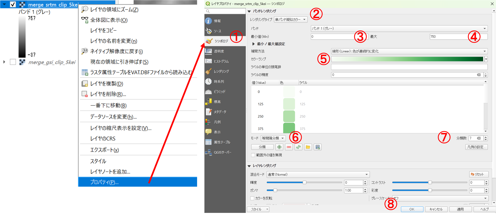
- レイヤの
プロパティ > シンボロジを選択 レンダリングタイプを単バンド擬似カラー- 最小値を0（通常、指定しない場合もあるが今回はわかりやすいように設定）
- 最大値を750（通常、指定しない場合もあるが今回はわかりやすいように設定）
- カラーランプを指定
- モードを
等間隔分類とする - 分類数を調整（今回は7とした）
OKをクリック
閾値は手動で変更することもできるため、様々な閾値の設定を試し、扇状地の地形が捉えやすいような分類に挑戦する。
6. 等高線・傾斜量・陰影図の出力
扇状地の傾斜を説明しやすいように、標高値から以下の手順で10m間隔の等高線を出力する。 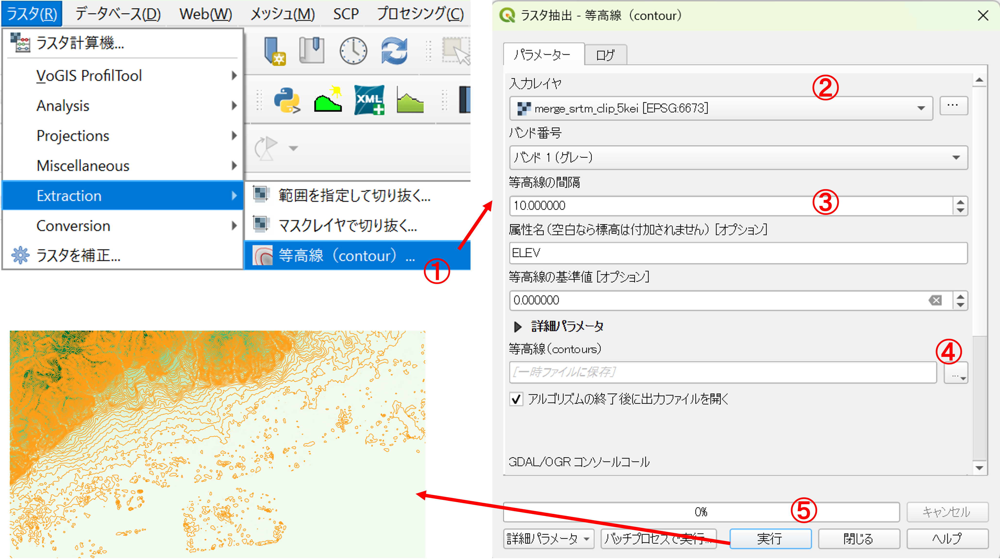
ラスタ > Extraction > 等高線（contour）を選択- 入力レイヤを指定
等高線の間隔を10とする- 出力ファイルを指定
実行をクリック
詳細に傾斜を地図で表示することを目的に以下を行う。 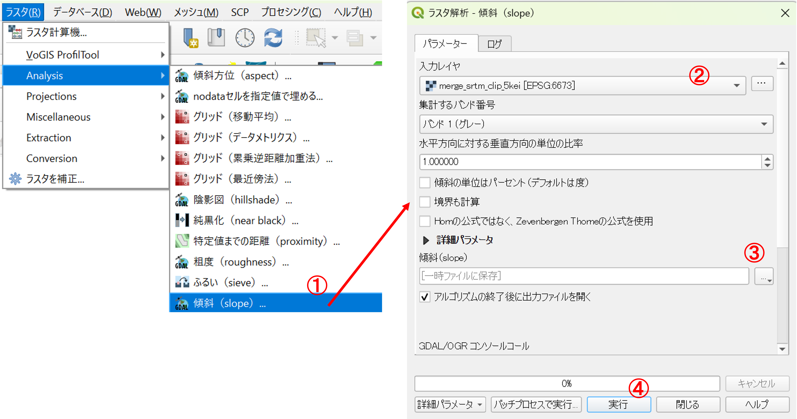
ラスタ > Analysis > 傾斜（slope）を選択- 入力レイヤを指定
- 出力ファイルを指定
実行をクリック
二次元表示だと起伏がわかりにくい場合があるため、以下の手順で陰影図を作成し、地形の視認性を高める。 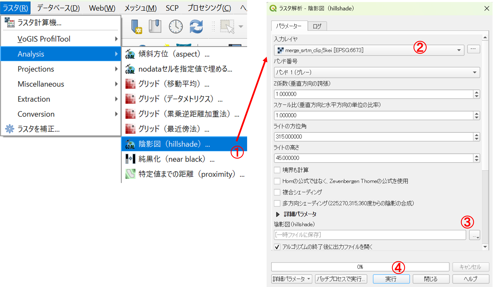
ラスタ > Analysis > 陰影図（hillshade）を選択- 入力レイヤを指定
- 出力ファイルを指定
実行をクリック
レイヤパネルで、DEM（標高値のラスタ）の下に陰影図を配置し、前者のプロパティから透明度を選択する。グローバルな不透明度を70%にすると、地形が視認しやすくなる。しかし、この方法は標高値に応じた色分けであるため、異なる地形でも同じ色で表現される場合もある点に注意する。
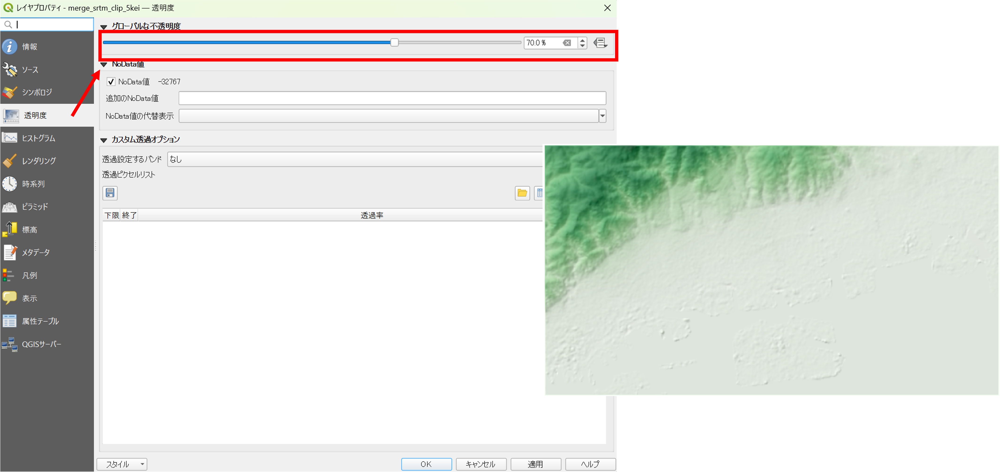
7. 三次元表示
標高値をすれば3D表示もできる。ここでは、空中写真と標高データを重ね合わせて3D表示していくため、事前に以下のようにQGISに地理院タイルの空中写真を読み込んでおく。次に、ビュー > 3Dマップビュー > 新規3Dマップビューを選択する。
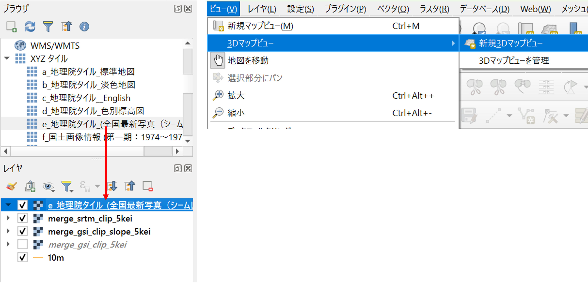
3D地図の画面が表示されたのを確認して、以下を行う。緑枠の鉛直スケールの値を2とすると土地の高さが２倍になる。起伏が小さい地域での地形の強調表示は有意義な場合もあるが、実際の地形と傾斜などの印象が変わるため、この値は注意して設定する。

- 設定を調整するアイコンをクリックし、
地形を指定 型をDEMラスタとする- もとになる標高データを指定
- OKをクリック
設定が完了した後に、3D地図の画面を操作すると角度をつけて地形を俯瞰できるようになる。マウスがある場合はマウスホイールを、なければShiftキーを押しながら視点の角度を変えられる。 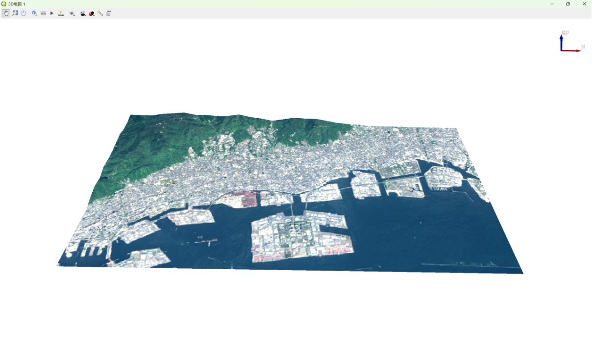
8. 地形断面図の作成
プラグイン>プラグインの管理とインストールからProfile toolを検索して、インストールする。
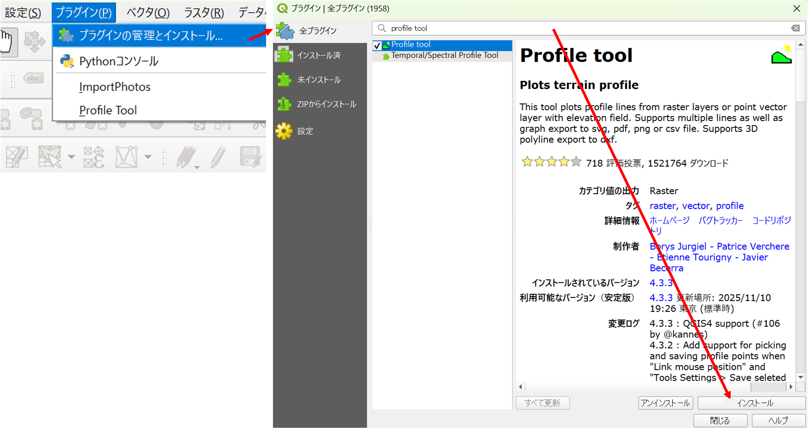
次の手順で断面図を作成する。 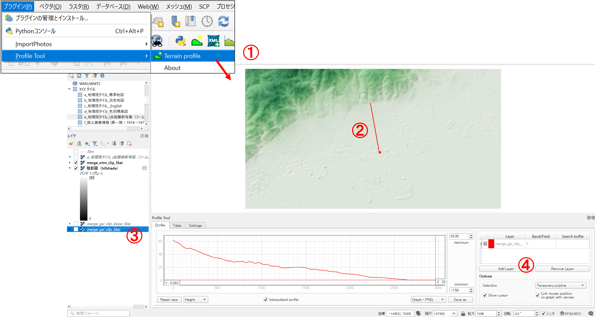
プラグイン> Profile tool > Terrain profileを選択- 地図上で始点をクリックして、終点でダブルクリック
- レイヤパネルで、標高値のラスタを選択
Add Layerをクリック
課題
次のいずれかの課題を実施し、次回の授業までにmanabaから提出してください。提出ファイルの形式は、パワポなどで作成し、PDF（スライドは2枚以内）で提出してください。地図がある場合は、縮尺、凡例、方位記号、タイトルをつけてください（3D表示地図を除く）。
課題①
本教材の冒頭で示した作成した地図を用いた授業例を想定し、扇状地を解説する授業を行う場合、以下の解説に利用できる地図を作成してください。パワポなどで作成した課題には、GISで出力した地図を用いた解説方法（どのように扇状地を解説するのか）も簡単に記載してください。
- 扇頂、扇央、扇端までの地形
- 扇頂から扇端までの傾斜（地図）
- 扇頂から扇端までの傾斜（断面・3D表示）
課題②
別の地域のDEMを用いて、扇状地を解説する授業案とそれに対応してGISで作成した複数の地図をまとめてください。